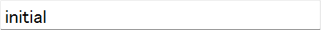
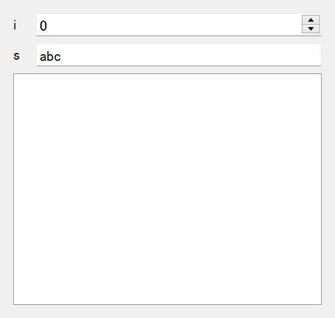
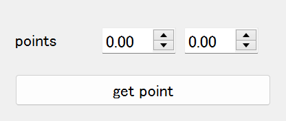
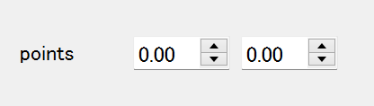
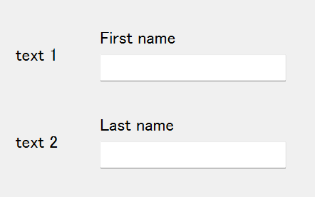

Use Fields in magic-class
MagicFields
Basics
When widgets are directly provided in a magic class as class variables, they should be
considered as "fields". The concept of fields was actually introduced in Python as an
standard library dataclasses as a Field object. A field is in a state of "ready to
be converted into a object", i.e., a new object is created for every instance
construction.
from dataclasses import dataclass, field
@dataclass
class C:
i: int = field(default=5)
s: str = field(default_factory=str)
c = C()
c
C(i=5, s='')
Here, the arguments default and default_factory are reminiscent of "default value"
and "type annotation" in magicgui. To apply the concept of field to widget
construction, magic-class has MagicField, which can store defaults as an object that
is ready to be converted into a widget.
from magicclass import field
fld = field(str, options={"value": "initial"})
widget = fld.to_widget()
widget

field can be used very similar to the create_widget fucntion in magicgui.
field(int, widget_type="Slider", options={"max": 10})
The first argument of field can be type, value or widget type.
from magicclass import magicclass, field
from magicgui.widgets import Table
@magicclass
class MyClass:
i = field(int)
s = field("abc")
table = field(Table)
ui = MyClass()
ui.show()

Define Callbacks
Another feature of widgets are their ability to emit signals upon state changes. In
magicgui, most of them have the same API widget.changed.connect(callback). Owing to
the simplicity, callback functions can be safely bound to MagicField with connect
method.
from magicclass import magicclass, field
@magicclass
class MyClass:
a = field(int)
@a.connect
def _callback(self):
print("value changed!")
Make Fields More Property-like
In many cases, you don't need all the controls of a widget. If you only need the value
of a field, you might not want to get the value via self.widget.value all the way.
Magic-class provides another field class called MagicValueField, which returns the
value itself when the field get accessed. You can create MagicValueField object using
vfield function. You can also defined callbacks similar to MagicField.
from magicclass import magicclass, vfield
@magicclass
class MyClass:
a = vfield(int)
@a.connect
def _callback(self):
print("value changed!")
def print_value(self):
print(f"a = {self.a}") # instead of "self.a.value"!
Even better widget configuration
MagicField and MagicValueField can be configured with options keyword argument.
However, passing a dict is not good for code readability and typing.
An alternative but more recommended way is to use with_options method.
from magicclass import magicclass, vfield
@magicclass
class MyClass:
a = vfield(int, options={"min": 0, "max": 10}) # instead of this
a = vfield(int).with_options(min=0, max=10) # use this
def print_value(self):
print(f"a = {self.a}")
If you only want to set choices, with_choices method is provided for this purpose.
from magicclass import magicclass, vfield
@magicclass
class MyClass:
a = vfield(options={"choices": [1, 2, 3]}) # instead of this
a = vfield().with_options(choices=[1, 2, 3]) # or this
a = vfield().with_choices([1, 2, 3]) # you can use this
def print_value(self):
print(f"a = {self.a}")
Using with_choices is not just a shortcut. It also properly predicts
the type of the output widget.
(Advanced) FieldGroup
A FieldGroup is a class that is used as a container of field objects and behave like a
field or vfield function itself.
from magicclass import FieldGroup, vfield
class Points(FieldGroup):
x = vfield(float)
y = vfield(float)
@magicclass
class A:
# FieldGroup is a direct subclass of Container
points = Points(layout="horizontal", labels=False)
def get_point(self):
print(self.points.x, self.points.y)
ui = A()
ui.show()

Here, a Points class has two child fields x and y. Since they are created by
vfield, their values can be simply obtained by self.points.x.
Deal with Widgets and Values
Basically, a FieldGroup can always be substituted with a magicclass. However, there
are some benefits to use FieldGroup over creating magicclass.
A FieldGroup is aware of its child fields. Even if you defined all the fields using
vfield you can still retrieve the widgets via widgets property.
from magicclass import FieldGroup, vfield
class Points(FieldGroup):
x = vfield(float)
y = vfield(float)
@magicclass
class A:
points = Points(layout="horizontal", labels=False)
ui = A()

When you want the values of points, you just have to do what you used to do.
ui.points.x # get the value of x
When you have to directly use the widget (FloatSpinBox in this example) of x,
following code works.
ui.points.widgets.x # get the widget of x
Create Many Similar Containers
Since a FieldGroup can be considered as a "widget creator", you can easily define a
widget template by subclassing it.
class LabeledLineEdit(FieldGroup):
lbl = vfield(widget_type="Label")
txt = vfield(str)
def __init__(self, label_text="label"):
super().__init__(labels=False)
self.lbl = label_text
# Now, `LabeledLineEdit` can be used similar to `field` or `vfield`.
@magicclass
class A:
text_1 = LabeledLineEdit("First name")
text_2 = LabeledLineEdit("Last name")
ui = A()
ui.show()

(Advanced) Use Fields in Non-GUI Classes
HasFields trait
MagicField and FieldGroup are also designed for general usage of widgets. This means
that essentially you can use vfield instead of property for getting or setting
parameters.
class A:
x = vfield(int)
a = A()
a.x = 10 # OK
a.x # Out: 10
However, a problem here is that there is no simple way to obtain the widget of x. Of
course you can use field instead of vfield to make the widget accessible but you
will have to get the value from a.x.value, which is not elegant.
As mentioned above, this problem is solved in FieldGroup by widgets property.
Therefore, the inaccessibility of widgets can generally be solved in a similar way.
The widgets interface becomes available by subclassing HasFields class.
from magicclass import HasFields
class A(HasFields):
x = vfield(int)
a = A()
a.x = 10 # OK
a.x # Out: 10
a.widgets.x # SpinBox
Note
Actually, FieldGroup is also a subclass of HasFields.